March Papers: Low-Rank Galore & 1.58-Bit Weights
March was a fruitful month for AI research, with plenty of papers for us to choose from. A trend in the work we've selected is the pushing of previously published methods to their limits, in new creative ways.
We start with GaLore, similar to the popular LoRA method for cheap fine-tuning, but introducing a low-rank approximation to the gradients instead of weights. It turns out this is particularly effective for pre-training.
Our second paper declares "The Era of 1-bit LLMs", showing that the previously published BitNet model can be tweaked for LLM training, such that weights can be rounded to either -1, 0 or 1. This is much stronger quantisation than most people thought possible. We also cover the DiPaCo paper, which demonstrates a method for scaling distributed MoE training, potentially to systems of such scale that they have to be distributed across datacentres.
Investigating a phenomenon that occurs as LLMs get larger, the Massive Activations paper brings valuable insight into why the numerics of LLMs tend to explode for certain tokens/hidden dimensions. We conclude with the G-Retriever paper, which provides a method for applying retrieval augmented generation (RAG) to textual graphs — something valuable in real-world applications where graph structures are commonplace.
We hope you enjoy this month's papers as much as we did! If you have thoughts or questions, please reach out to us at @GCResearchTeam.
GaLore: Memory-Efficient LLM Training by Gradient Low-Rank Projection
The key idea
Training and fine-tuning Large Language Models (LLMs) on consumer accelerated hardware has been a challenge due to significant memory requirements as model size increased. As a consequence, a large literature has emerged around low-rank approximation of model weights, including the well-known LoRA method. This work proposes a low-rank approximation of gradients instead of weights, leading to similar memory savings while improving accuracy in pre-training applications.
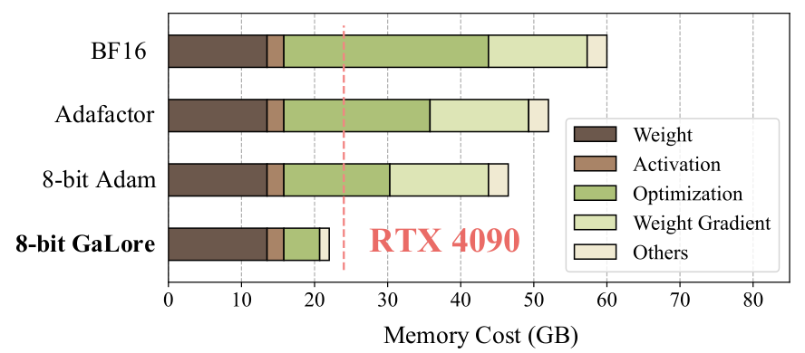
Background
The well-known Low-Rank Adaptation (LoRA) method reparameterizes a weight matrix \(W\) by using a low-rank projection:
where \(W_0\in R^{m \times n}\) are (usually) frozen pre-training weights, \(A\in R^{m \times r}\) and \(B\in R^{r \times n}\) are trainable low-rank adaptors. Since \(r\) is chosen much smaller than \(m\) and \(n\), the use of LoRA reduces massively memory usage, opening the door to fine-tuning of LLMs on consumer hardware.
Their method
The authors of GaLore propose to apply low-rank approximation to the gradients instead of weights, reducing memory usage similarly to LoRA as well as opening the door to pretraining on consumer hardware. The authors prove that the gradients become low-rank during training, with a slowly evolving projection subspace.
In this algorithm, the model is left unchanged, but the training loop is modified as following:
for weight in model.parameters():
grad = weight.grad
# original space -> compact space
lor_grad = project(grad)
# update by Adam, Adafactor, etc.
lor_update = update(lor_grad)
# compact space -> original space
update = project_back(lor_update)
weight.data += update
project and project_back are defined as:
Similarly to LoRA, the projection space rank \(r\) is chosen much smaller than \(m\) and \(n\), leading to reduced memory usage on gradients and optimizer state. Matrices \(P_t\) and \(Q_t\) are estimated via a Singular Value Decomposition (SVD) on the full rank gradient \(G_t\), and are updated every ~50-1000 training iterations (accuracy being fairly stable within this interval).
Results
On fine-tuning tasks, GaLore and LoRA achieve close accuracy and memory consumption.
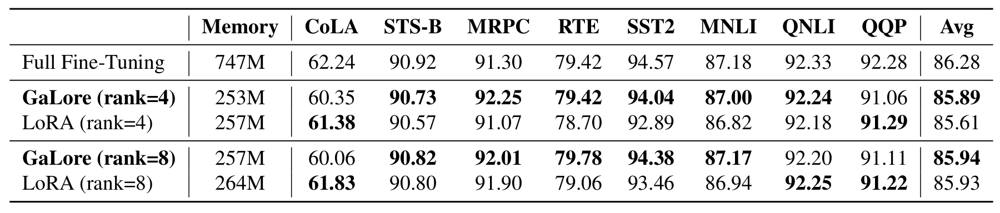
Additionally, GaLore shows much better performance on LLaMA pretraining compared to LoRA and ReLoRA, while using significantly less memory. Interestingly, for pre-training, the subspace rank \(r\) can be seen as an hyperparameter trading-off memory and compute budgets (i.e. a smaller rank requires more iterations to achieve similar accuracy).
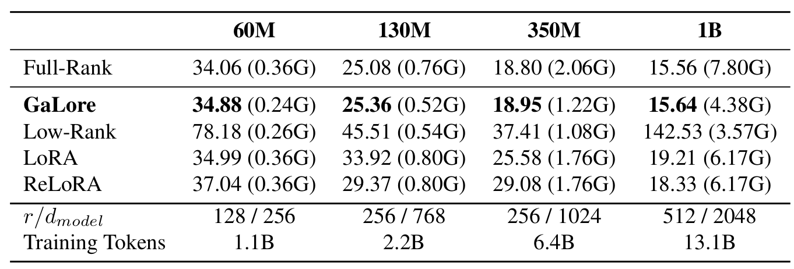
Takeaways
GaLore offers a compelling and accurate alternative to LoRA for memory efficient LLM pre-training and fine-tuning, with the main advantage of being an off-the-shelf pure optimizer algorithm. As mentioned by the authors, an interesting extension of this work would be to investigate how to integrate quantization, in the vein of QLoRA, to push further model size on customer hardware.
The Era of 1-bit LLMs: All Large Language Models are in 1.58 Bits
The key idea
Training and inference of large language models when quantising weights to {-1, 0, 1} and activations to int8 during forward pass matrix multiplications performs similarly to FP16.
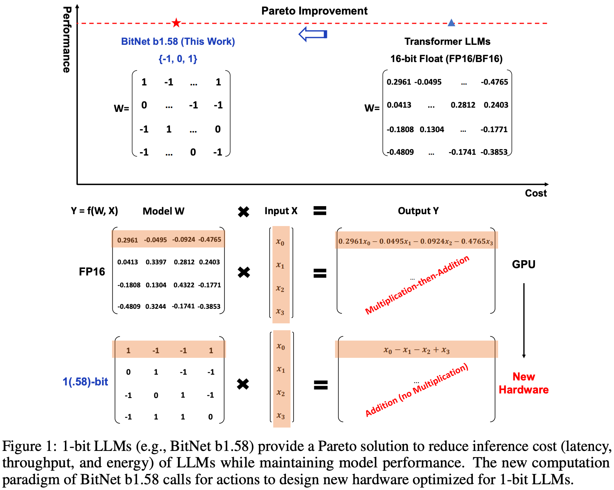
Their method
Master weights are stored in higher precision (e.g., FP16). With ZeRO-offloading, the memory overhead of these weights can be partly discounted and quantised weights can be computed once across gradient accumulation steps.
In the forward pass, linear layer weights are quantised to {-1, 0, 1} by normalising with the absolute mean, rounding to the nearest integer and clipping values outside this range. Activations are quantised to int8 by bucketing values with a simple absolute max rule.
Straight-through-estimators are used to compute gradients and are accumulated in FP16.
By restricting weight values to {-1, 0, 1}, matrix multiplications can be computed with cheap integer addition/subtraction instructions only, and without any need for expensive floating point fused multiply-accumulate (FMAC) instructions. In practice, the authors still use FP16 FMAC instructions in their implementation, perhaps to avoid costly casts and the need to compute non-matmul operations in higher precision.
Results
Comparing against FP16 Llama 3B pretrained on 100B tokens shows minimal change in validation perplexity and downstream task accuracy
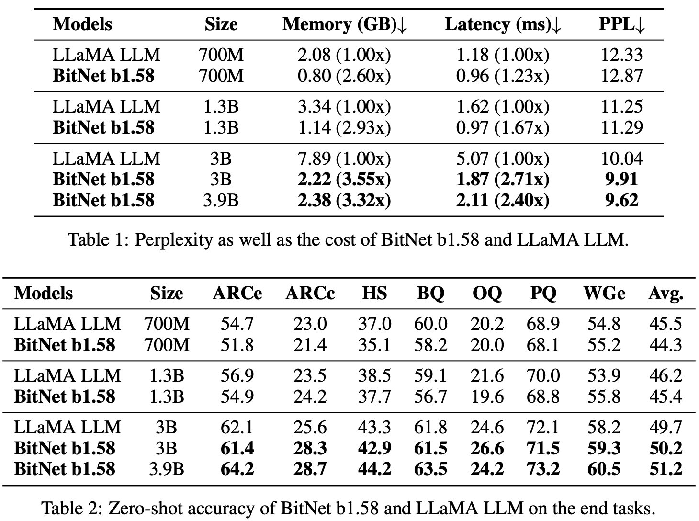
Even more impressively, 1.58-Bit LLM exceeds the performance StableLM-3B when reproducing training recipe on 2 trillion tokens.
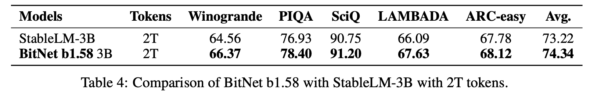
The authors also show latency and throughput improvements for LLM inference, mainly due to far smaller memory footprint of weights (1.58 bits per element) and KV-cache (8 bits per element). This is somewhat hard to compare since post-training quantisation to 2-bits can work really well but isn't considered in this work.
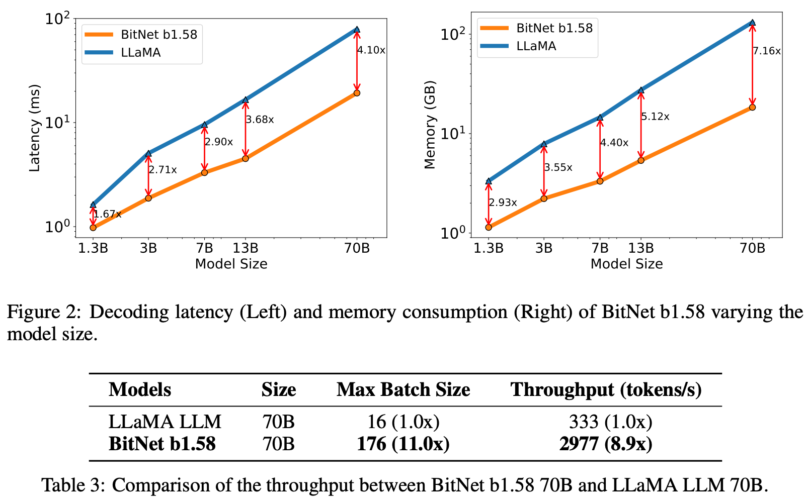
Takeaways
At first glance, this is a "too good to be true" type result. However, some of these results have since been independently reproduced. It goes to show that matrix multiplications can be approximated with even looser bounds than is standard, while still producing smooth enough gradient signals for updating master weights.
The authors propose that new hardware could or should be designed to exploit the power-efficiency, theoretical speedup and memory savings of training without floating point multiply-accumulate units. This is a tantalising proposition, but should not be totally discounted against the cost of accumulators, reductions, casts, and elementwise functions in the design of specialised hardware.
DiPaCo: Distributed Path Composition
The key idea
If the bottleneck to scaling training is communication rather than FLOPs, a recipe that blends together mixture-of-experts models and local optimisation to create a more modular model sort of works.
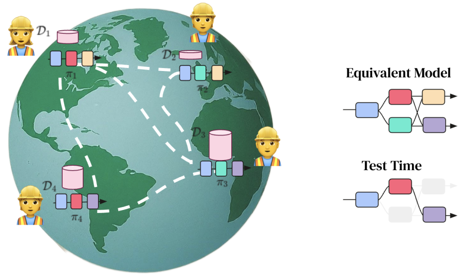
Background
In the near-ish future, we may saturate the number of FLOPs a single datacentre can churn out largely due to energy requirements to power a datacentre.
If model training requires scaling beyond this saturation point across multiple datacentres, developers will meet a cliff in the bandwidth supported for communicating between datacentres.
In this scenario, the key bottleneck to scaling throughput is no longer FLOPs, but communication volume across this low-bandwidth channel between datacentres.
This paper introduces a recipe for training models under this constraint.
Their method
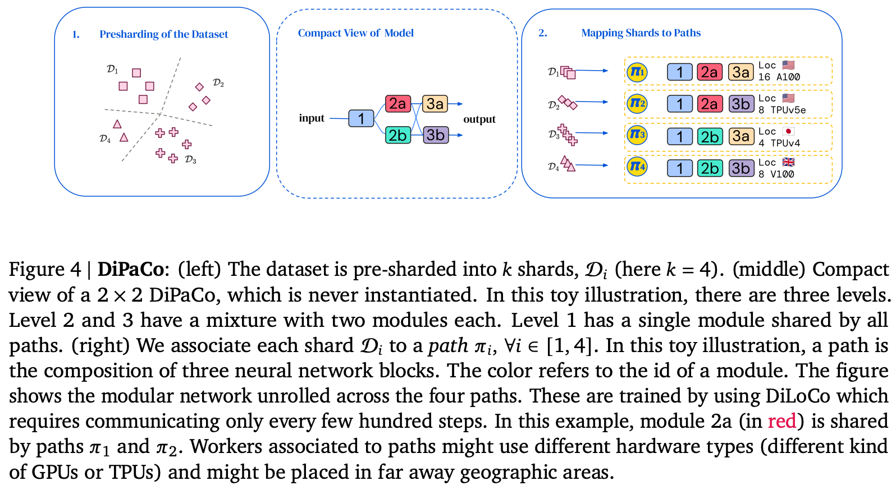
- Shard dataset across workers ahead-of-time using k-means cluster assignments of embeddings from first 32 tokens of the sequence.
- Initialise and shard a base model into modules width- and depth-wise (modules and levels respectively)
- Assign end-to-end path through modules to each worker. Ideally all paths should be assigned, but this is unrealistic with large number of shards as \(\textrm{\#paths} = \prod_i^{\textrm{\#levels}}\textrm{\#modules}_i\). This results in some modules being assigned to multiple paths.
- Locally optimise each path for a \(\tau\) training steps.
- Average module updates across paths to estimate global gradient and globally optimise
- Repeat 4. and 5 for \(T\) steps.
Results
Across experiments, the authors consider models with paths comprising of 150M parameters, with each path comprised of two levels and choosing one of up to 16 modules. They argue that this results in two fair baselines to compare to:
- A 150M parameter dense model (parameter-equivalent per path)
- A 1.3B parameter dense model, since the base sharded models comprises up to 16 * 150M / 2 = 1.2B parameters
Trying a bunch of different configurations, DiPaCo lies somewhere between these two extremes. Crucially it looks as if dense training is needed early in training and that additional expressivity is needed, so some modules appear in only a single path.
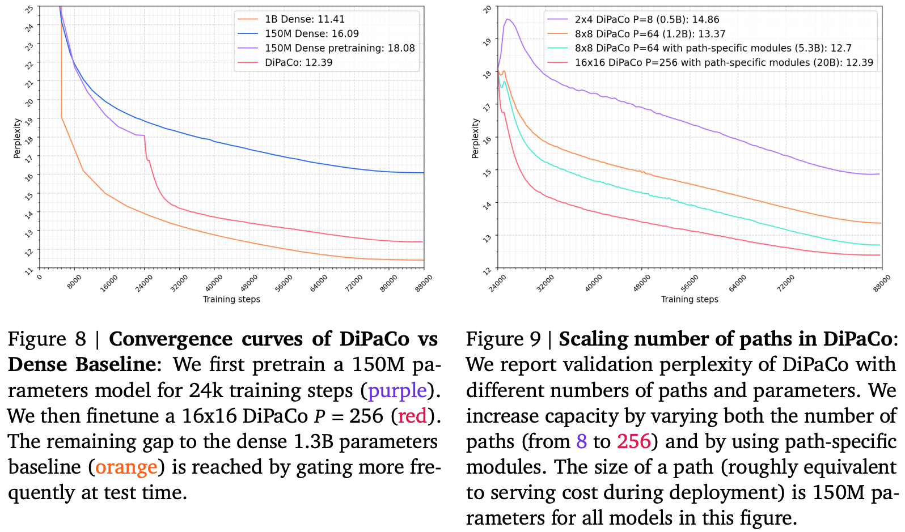
They argue that the remaining performance gap can be closed by re-sharding the dataset across workers every 64 tokens during inference. This would surely mean KV caches would need to be recomputed for each re-shard, so this is unlikely to be workable in practice.
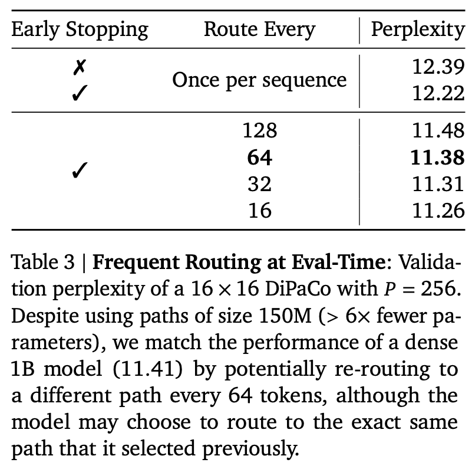
Takeaways
An interesting proof-of-concept for how large-scale distributed training may look in future based on the assumption that the cost of communication outweighs the cost of compute. However, this approach may be somewhat premature given advances in long distance networking lowering the cost of communication sufficiently that dense training at large enough scales is feasible.
Massive Activations in Large Language Models
The key idea
All LLMs exhibit very large activation values after a few layers — a major challenge for LLM quantisation. This paper shows why: massive activations are the transformer's way of attempting to add a fixed bias term in the self-attention operation. The authors also demonstrate a neat solution based on this analysis.
Background
Papers like LLM.int8() and SmoothQuant previously studied a similar problem with large activation values appearing, termed outlier features. The authors claim that massive activations are a slightly different phenomenon though:
Conceptually, a massive activation is a scalar value, determined jointly by the sequence and feature dimensions; in contrast, an outlier feature is a vector, corresponding to activations at all tokens.
It's not entirely clear whether these two phenomena are linked. Specifically, in this paper they focus on activations after the residual-add operation.
Massive activations are very rare (0.01% for Llama2-7B) and appear in specific dimensions for particular tokens.
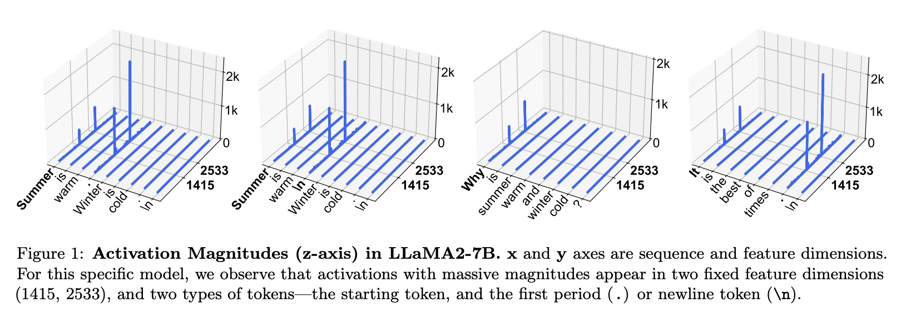
Their method
The authors first observe that a set of massive activations often have very similar values to each other. In fact, setting them to a fixed mean value doesn't degrade performance, but setting them to zero does.
Through a series of steps this leads them to the observation that the massive activations are acting as a fixed attention bias. The mechanism for this is as follows:
- Massive activations hit the LayerNorm, causing the token-vectors containing them to shrink to the scale of regular token-vectors. Massive-activation tokens now look like one-another: sparse and spiky.
- These representations are then projected into Q, K and V. The massive activations are gone, but those tokens that had them now all have similar representations.
- As the resulting V terms for these tokens now all look the same, this has the effect of adding a constant bias vector to each attention output.
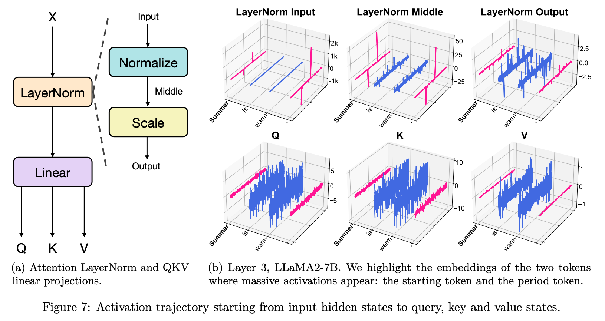
The key observation here is that the transformer has essentially learned a "hack" to add this bias to the attention output, as it's not present in the original transformer. From this an improved method is derived: add additional trained parameters \(\mathbf{k'}, \mathbf{v'} \in \mathcal{R}^d\) as an explicit attention bias for each head:
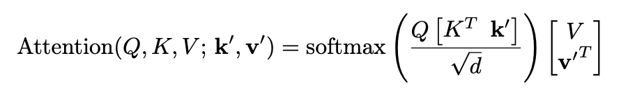
Results
They train three GPT-2 models: a regular one, one with a sink token, and one with their new attention bias. Each reaches the same performance, but the latter no-longer has massive activations.
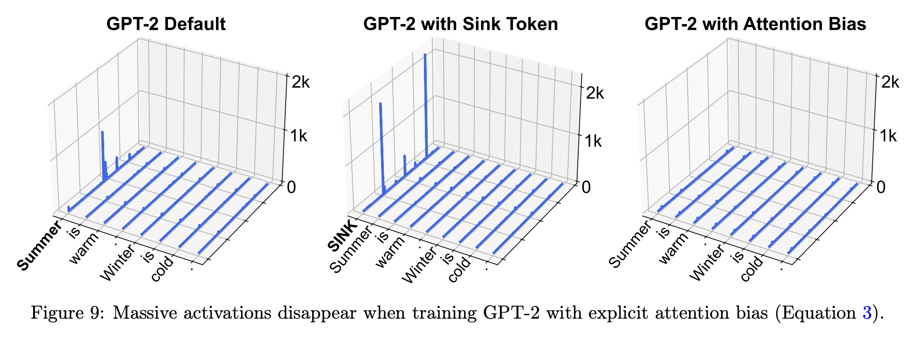
Similar conclusions are reached for vision transformers, where it's also shown that the recently proposed register tokens serve a similar role to attention biases.
It's worth noting here that although activation magnitudes have dropped, some are still over 100. It would be valuable to see work that investigates these medium-scale activations.
Takeaways
This kind of work investigating transformer internals is really valuable. Although massive activations don't directly harm performance, their presence has significant side-effects.
The most obvious of these is quantisation, where they can force us to use more bits than necessary to represent these outlier values. More generally, our ability to innovate in model design may be limited by the need for architectures that can accommodate learning these attention biases (explicitly or implicitly). Understanding this mechanism gives us the potential to build better and more efficient models.
G-Retriever: Retrieval-Augmented Generation for Textual Graph Understanding and Question Answering
The key idea
From business transactions to knowledge graphs, vast amounts of real-world data possess a graph structure. As large language models arise as a major way for humans to interact with data it is of critical importance to enhance their capabilities of understanding graphs.
G-Retriever extends the concept of retrieval augmented generation (RAG) to textual graphs and enables LLM users to ask questions about a graph.
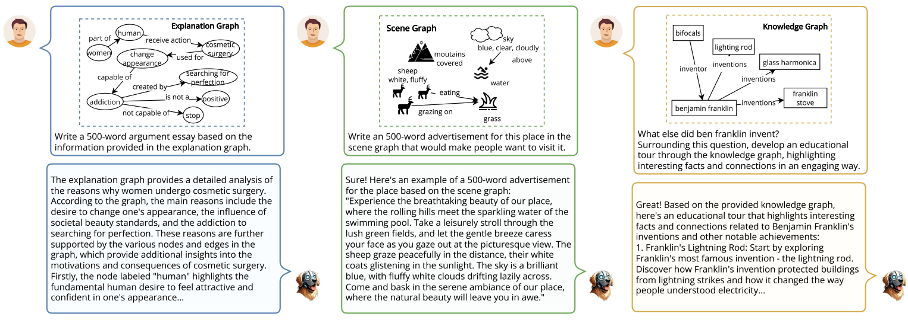
Background
RAG has firmly established itself as key method for LLMs to retrieve information from a corpus of documents and thereby improve factual correctness and interpretability. Similar to traditional RAG, the first step for retrieving information from graphs is to identify relevant bits within the graph. In a second step, the retrieved data has to be made digestible by the LLM. For both steps, a range of methods has been employed over the last years, so far with no clear winner.
Their method
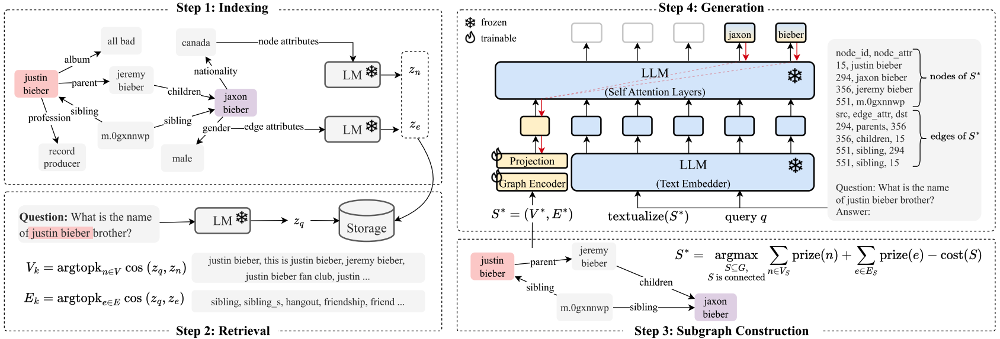
The authors propose a four-step method for performing RAG over a graph \(G = (V,E)\) with vertices \(V\) and edges \(E\):
1. Indexing of all nodes and edges in \(G\) using embedding vectors generated by a frozen language model \(\textrm{LM}\).
2. Retrieval of most relevant nodes and edges for a give query by performing a k-nearest neighbour search between the query embedding as generated by \(\textrm{LM}\) and the stored node and edge embeddings.
3. Subgraph Construction to identify a subgraph of \(G\) that maximises the relevant information content while filtering out nodes and edges that have no value for the given query. The authors formulate this as a variant of the Prize Collection Steiner Tree (PCST) problem that, given a graph with a value assigned to nodes and a cost assigned to edges, aims at finding a subgraph that maximizes profit.
By adding a prize for edges the information carried by relevant edges is considered as well:
where
is the value of the top-k nodes and edges based on their ranking.
4. Text Generation that uses both, a representation of the subgraph as plain text which is concatenated to the query and a learned embedding of the graph generated by a GNN which is concatenated to the embedded sequence.
Results
The authors use the pretrained 7 billion parameter LLama2 as LLM to compare three model configurations across different datasets: * Prompting a frozen LLM with the textual representation of the subgraph ("Inference-Only"). * Comparing task-specific prompt tuning to prompting with the learned graph embedding. In both cases the LLM receives the plain text representation of the subgraph. * Fine-tuning the LLM to the specific tasks using Low Rank Adaptation (LoRA) with and without using the subgraph embeddings.
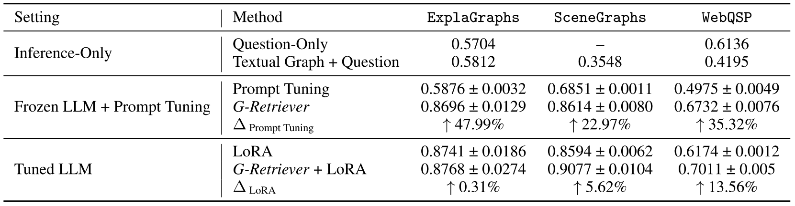
The results show that with a frozen LLM, G-Retriever achieves results comparable to the fine-tuned models and significantly outperforms the prompt tuning case.
Finally, an ablation study demonstrates the importance of both, the textualised and the embedded subgraph.
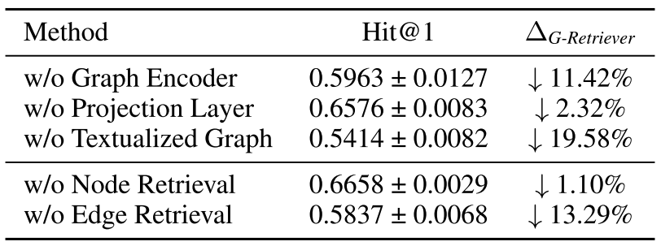
Takeaways
G-Retriever shows strong results for retrieving information from graphs to augment LLMs. In particular, the interpretation of the subgraph generation as PCST problem and the simultaneous use of textual and GNN-embedded graph attributes appear to benefit model accuracy.
It is, however, hard to compare these results to other approaches that integrate LLMs with GNNs as the field still lacks widely accepted benchmarks for comparing graph retrieval methods. Moreover, it can be expected that the impact of these methods on inference throughput and latency will become increasingly important.